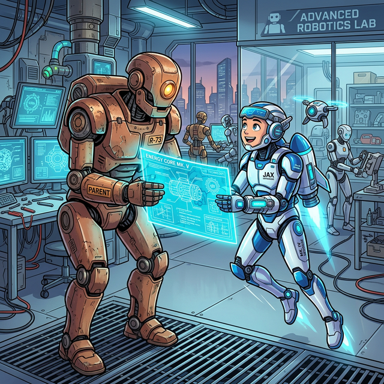
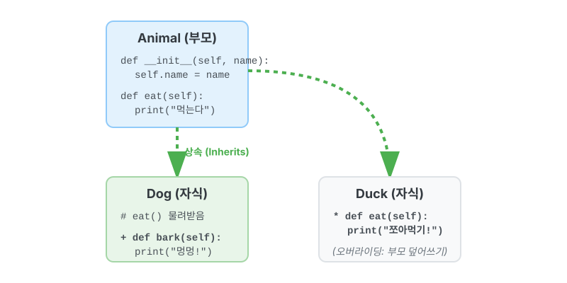
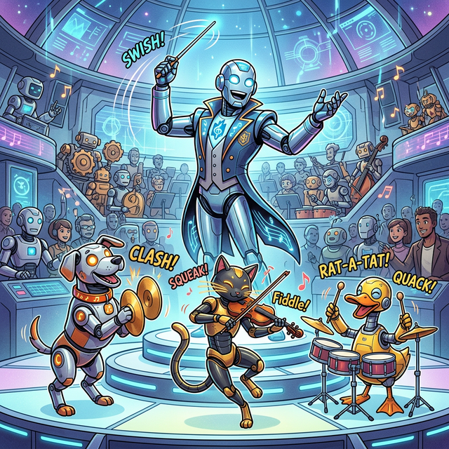
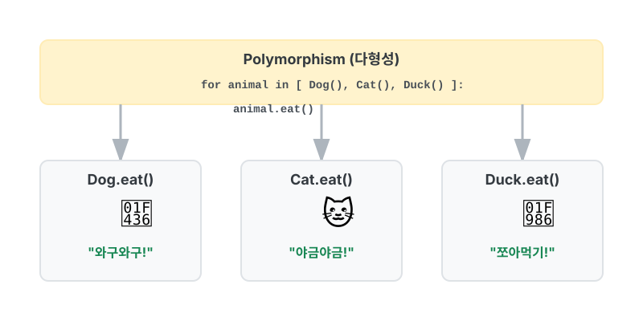

4주차: 상속과 다형성 - 유연하고 확장 가능한 설계 🌿
기존 클래스를 물려받아 기능을 확장하는 상속(Inheritance)과 동일한 메시지 호출에도 각자 다르게 대응하는 다형성(Polymorphism)의 환상적인 하모니를 배웁니다.
학습목표
본 장에서는 부모가 피땀 흘려 짜놓은 수만 줄의 코드를 자식 클래스가 단 한 줄만으로 꿀꺽 삼키며 수직적인 코드 재사용의 극치를 보여주는 ‘상속(Inheritance)’의 원리를 다룹니다. 또한 부모의 간섭을 피해 내 입맛대로 행동을 갈아엎는 오버라이딩(Overriding)을 통해 코드 중복을 줄이고 구조를 확장하는 방법을 알아봅니다.
💡 TL;DR (1분 핵심 요약): 상속이란?
- 상속 (Inheritance): “복사 & 붙여넣기는 하수나 하는 짓이다!” 부모 클래스가 가진 변수와 함수를 새로운 자식 클래스가 그대로 물려받아, 뼈대는 재활용하고 본인만의 새로운 기능(로켓 부스터, 레이저 빔)만 쏙쏙 추가하는 진화의 과정입니다.
- 오버라이딩 (Overriding): 부모가 물려준 방식이 구식이라 마음에 안 들면, 자식이 똑같은 이름의 함수를 다시 만들어서 아예 덮어써서(개조해서) 사용하는 기법입니다.
1. 상속: 부모의 유전자를 물려받는 진화 장치
객체지향(OOP)을 쓰는 절대적인 이유는 ‘코드의 재사용성’입니다. 똑같은 이름표와 배터리 속성을 가진 로봇을 100종류나 매번 처음부터 정의한다면 밤을 새워야 합니다. 상속은 이 고통을 끝내줍니다.

(웹툰 비유: 화면 왼쪽, 바퀴 하나 달린 구형 ‘부모 로봇’ 옆에, 그 바퀴를 똑같이 물려받으면서도 제트팩과 레이저 눈을 추가 장착한 화려한 ‘자식 로봇’이 서 있습니다.)
2. 기본 문법: 피를 이어받는 자식 클래스
예제 1: 부모의 능력은 나의 것 (기본 상속)
클래스를 새로 만들 때, 괄호 () 안에 물려받고 싶은 부모(Super) 클래스의 이름을 적어주기만 하면 끝입니다.
# 1. 뼈대가 되는 위대한 부모 클래스 선언
class Animal:
def __init__(self, name):
self.name = name
def eat(self):
print(f"[{self.name}] 와구와구 밥을 먹습니다.")
# 2. 괄호 안에 Animal을 넣어 부모의 유전자를 모두 물려받은 자식 클래스
class Dog(Animal):
# 부모에게 없는 나만의 새로운 필살기 추가!
def bark(self):
print(f"[{self.name}] 멍멍 짖습니다! 왈왈!")
class Cat(Animal):
def meow(self):
print(f"[{self.name}] 야옹하고 웁니다.")
# 3. 객체 실전 조종
dog1 = Dog("바둑이")
dog1.eat() # 자식은 코드를 짠 적도 없는데 부모의 '먹기' 능력을 그대로 사용합니다.
dog1.bark() # 자신만의 고유 능력 방출!
cat1 = Cat("나비")
cat1.eat()
cat1.meow()
3. 부모님께 용돈 타오기: super() 의 마법
자식이 태어날 때 뭔가 자기만의 초기화 작업(__init__)을 하고 싶어서 생성자를 덮어쓰게 되면, 비극적이게도 부모가 초기화해주던 세팅(name)이 동작하지 않고 끊겨버립니다. 이때 끊어진 부모의 생성자 파이프라인을 다시 연결해 주는 혈맹 코드가 바로 super() 입니다.
예제 2: 부모의 __init__을 강제 기상시키기
class Bird(Animal):
def __init__(self, name, wing_span):
# 🚨 여기서 super().__init__(name)을 안 부르면 큰일 납니다!
# 부모님, 제발 일어나서 제 '이름(name)' 좀 먼저 초기화 세팅해 주세요!
super().__init__(name)
# 부모가 이름을 지어줬으니, 이제 제 고유 속성인 '날개 길이'를 세팅합니다.
self.wing_span = wing_span
def fly(self):
print(f"[{self.name}] 날개를 폅니다. 길이는 {self.wing_span}cm 입니다.")
bird1 = Bird("참새", 20)
bird1.eat() # name이 super()를 통해 완벽하게 세팅되어 오류 없이 밥을 먹습니다.
bird1.fly()
4. 부모를 딛고 일어서라: 오버라이딩 (Overriding)
부모에게 물려받은 기능이 낡고 구식이거나 내 입맛에 맞지 않나요? 그럼 자식 클래스 안에서 똑같은 이름의 스킬(메서드)을 다시 만들면 됩니다. 파이썬은 망설임 없이 부모의 스킬을 폐기하고 자식의 최신 스킬로 덮어씌워(Override) 줍니다.
예제 3: 부모의 행동 내 맘대로 개조하기
class Duck(Animal):
# 부모 Animal에도 eat()이 있지만, 오리답게 쪼아 먹도록 덮어씌웁니다! (오버라이딩)
def eat(self):
print(f"[{self.name}] 부리로 바닥의 곡물을 쪼아 먹습니다. 꽥꽥!")
duck1 = Duck("도널드")
duck1.eat() # 원본인 '와구와구 밥을 먹습니다'는 소멸하고, 오버라이딩된 결과가 나옵니다.
☕ Java vs 🐍 Python 스나이퍼 비교
1. 상속 선언 키워드
- Java:
class Dog extends Animal이라는 길고 명시적인 키워드를 써야 합니다. - Python: 압도적으로 쿨합니다. 그냥 괄호만 치면 끝입니다.
class Dog(Animal):
2. 고통스런 다중 상속의 유무
- Java: 부모를 2명 이상 모시는 다중 상속(Multiple Inheritance)을 철저히 금지합니다. 피가 섞이면 복잡해진다고 강력히 규제하며 오직 인터페이스(
implements)로만 우회시킵니다. - Python: “규제 그딴 거 없다. 네 자유다.” 파이썬은
class Liger(Lion, Tiger):처럼 당당하게 다중 상속을 지원합니다. MRO(메서드 탐색 순서)라는 내부 규칙으로 충돌을 알아서 정리합니다. (강력하지만, 설계의 복잡성을 초래하므로 고급 개발자들만 조심해서 다룹니다.)
코딩 영단어 학습 📝
- Inheritance: 상속, 유전. (부모가 자식에게 재산이나 DNA를 넘겨주듯, 코드를 복사 붙여넣기 할 필요 없이 부모의 스펙을 그대로 이어받는 시스템입니다.)
- Super: 위쪽의, 초월적인. (
super()의 본 뜻은 초인(슈퍼맨)이 아니라, 계급 구조상 내 머리 꼭대기 위에 있는 최상위 개체, 즉 나를 낳아 준 ‘부모 설계도’를 지칭하는 예약어입니다.) - Override: 짓밟다, 무시하다, 무효로 하다. (Over(위로) + Ride(타다). 부모의 낡고 구식인 메서드 지시 위로 자식이 새롭게 올라타서 기존 코드를 완전히 무시하고 산산조각 덮어씌워 버리는 혁명적인 키워드입니다.)
학습목표
본 장에서는 똑같은 지시문(울어라!) 하나로 강아지는 짖고 고양이는 야옹하게 만드는 ‘다형성(Polymorphism)’의 마법 같은 쾌감을 통해 진정한 객체지향 설계의 확장성을 무기로 삼습니다. 동일한 코드가 다양한 모습으로 실행되는 방법을 완벽히 이해합니다.
💡 TL;DR (1분 핵심 요약): 다형성이란?
- 다형성 (Polymorphism): 수백 마리의 다른 동물들을 리스트에 싹 다 가둬놓고,
동물.짖어라()단 한 줄만 명령하면, 강아지는 알아서 “멍멍!”, 닭은 “꼬끼오!” 하고 각자의 생태계에 맞게 똑똑하게 다르게 행동하는 파이썬 최고의 마법입니다.
1. 다형성 (Polymorphism): 동일한 명령, 위대한 각자의 행동
‘다형성’이란 이름표 하나로 여러 객체를 조종하는 객체지향의 궁극적인 마법입니다. 이전 장에서 배운 추상화나 오버라이딩을 활용하여 자식 클래스가 부모의 메서드를 새롭게 재정의하면, 메인 프로그램은 그 자식의 정확한 종류를 모른 채 동일한 지침으로 다루기만 해도 알아서 적절히 동작합니다.
메인 지휘자(나의 코드)는 괄호 속의 동물이 강아지인지, 오리인지 조사할 필요 자체가 아예 없습니다. 그냥 리스트에 다 때려 넣고 한 번만 지시하면 끝납니다.

(웹툰 비유: 하나의 지휘자 로봇이 “연주해!”라고 단 한 번 마법봉을 휘두릅니다. 똑같은 명령을 받은 강아지 로봇은 바이올린을, 고양이 로봇은 피아노를, 오리 로봇은 드럼을 치며 각자의 방식으로 완벽한 교향곡을 만들어냅니다.)
예제: 100종류의 동물을 단 두 줄로 조종하는 기적
오버라이딩(Overriding)된 자식들이 각자 알아서 행동하기 때문에 코드가 극도로 짧아지고 우아해집니다.
class Animal:
def eat(self):
print("동물이 먹이를 먹습니다.")
class Dog(Animal):
def eat(self):
print("[멍멍이] 와구와구 밥을 먹습니다.")
class Cat(Animal):
def eat(self):
print("[야옹이] 와구와구 밥을 먹습니다.")
class Duck(Animal):
def eat(self):
print("[오리] 부리로 바닥의 곡물을 쪼아 먹습니다. 꽥꽥!")
# 세상의 온갖 동물들을 하나의 큰 우리[리스트]에 다 집어넣어 버립니다.
animals = [Dog(), Cat(), Duck(), Animal()]
# 지휘자 출격: 동물들의 종류 따위는 검사하지 않는다. 그냥 무조건 먹어라!
for animal in animals:
animal.eat()
[다형성의 화려한 콘솔 출력]
[멍멍이] 와구와구 밥을 먹습니다.
[야옹이] 와구와구 밥을 먹습니다.
[오리] 부리로 바닥의 곡물을 쪼아 먹습니다. 꽥꽥! (<- 스스로 오버라이딩된 스킬 발동)
동물이 먹이를 먹습니다.
이것이 파이썬 데이터 엔지너어들이 수백만 줄의 비즈니스 로직을 if / elif / else 떡칠 없이 깔끔하고 무제한 확장이 가능하도록 짜는 절대적인 비결입니다.
☕ Java vs 🐍 Python 스나이퍼 비교
1. 인터페이스와 덕 타이핑 (Duck Typing)
- Java: 다형성을 구현하려면 철저한 계약서인
Interface를 설계해서 강제로implements시키고 족쇄를 채워야만 컴파일 에러를 피할 수 있습니다. - Python: 파이썬은 “오리처럼 걷고 오리처럼 꽥꽥거리면, 그냥 오리인갑다 하고 넘어가자(Duck Typing)”라는 매우 자유로운 심리학을 가집니다. 부모가 누구든, 인터페이스를 맺었든 말든 묻지 않습니다. 객체 안에
eat()이라는 이름의 스킬만 진짜로 달려 있다면 파이썬은 군말 없이 실행해 주는 초유연성의 극치를 보여줍니다.
🎧 Vibe Coding
🗣️ 학생 프롬프트 (AI에게 이렇게 명령해 보세요): “파이썬 다형성(Polymorphism)을 활용해서 스타크래프트 유닛 공격 시스템을 만들어 줘. 1) 부모 클래스
Unit을 만들고, 방어력(armor) 속성을 초기화해 줘. 그리고 비어있는attack()스킬을 만들어. 2)Unit을 상속받는 자식 클래스Marine(마린)과Tank(탱크) 두 개를 만들어 줘. 3) 자식들은 오버라이딩을 통해attack()스킬을 덮어써서 마린은 ‘두두두! 총 발사!’, 탱크는 ‘쾅! 대포 발사!’ 라고 출력하게 해. 4) 리스트에 마린 2마리, 탱크 1마리를 넣고 딱 한 번의for문을 돌려서 모든 유닛이 동시에attack()하도록 명령하는 코드를 짜줘.”
코딩 영단어 학습 📝
- Polymorphism: 다형성. (Poly(많다) + Morphos(형태, 모양). 하나의 지시봉(함수명)을 휘둘렀는데, 바라보는 객체가 마린이냐 탱크냐 강아지냐에 따라 알아서 수만 가지의 다채로운 형태로 쪼개져 작동하는 가장 아름다운 객체지향 건축 미학입니다.)
✍️ 이번 주 연습 문제
문제 1. 부모 클래스의 메서드를 자식 클래스에서 재정의하는 메서드 오버라이딩(Method Overriding)의 특징을 설명하고 예시 코드를 구현하세요.
문제 2. 파이썬 특유의 덕 타이핑(Duck Typing) 철학인 “오리처럼 걷고 오리처럼 운다면 그것은 오리다”의 의미를 다형성 관점에서 해석해 보세요.
문제 3. (심화) 상속 관계에서 자식 클래스가 super().__init__()을 호출해야 하는 이유를 자식 인스턴스의 속성 바인딩 관점에서 명확하게 증명해 보세요.
📖 교재 상세 학습: 05 유전자 물려받기: 상속(Inheritance)
05 코드를 복사하지 않고 부모 능력을 훔쳐오기: 상속
온라인 게임 캐릭터를 기획하며 ‘검사’와 ‘마법사’라는 두 직업의 코드를 짠다고 상상해 봅시다. 두 직업은 휘두르는 무기와 공격 스킬만 다를 뿐, ‘숨쉬기’, ‘걷기’, ‘뛰기’ 같은 사람 고유의 기본 행동 패턴은 완벽히 같습니다. 이럴 땐 모든 직업마다 똑같은 걷기 코드를 노가다로 붙여넣는 대신, 공통분모를 묶어 ‘인간(부모)’이라는 베이스 클래스로 선언해 두고 두 하위 직업(자식)에게 이 능력을 통째로 상속(Inheritance)해 주는 기법이 효율적입니다.
코드: 부모의 유전자를 상속받는 자식들
# 1. 뼈대가 될 부모 클래스(Base Class)를 먼저 세팅합니다.
class BaseHuman():
def walk_around(self):
print("두 발로 뚜벅뚜벅 걸어갑니다.")
def eat_food(self):
print("음식을 맛있게 우물우물 먹습니다.")
# 2. 새로운 클래스를 만들 때, 이름 옆 괄호 안에 부모 클래스 이름을 슬쩍 밀어 넣으면 유전자 복제 끝!
class Knight(BaseHuman):
# 전사만의 전용 고유 스킬을 타이핑해 넣습니다.
def slash_sword(self):
print("양손검으로 적을 무자비하게 내리치기!")
class Sorcerer(BaseHuman):
def cast_fireball(self):
print("강력한 파이어볼 연성 후 발사!")
# 전사 캐릭터를 하나 서버에 스폰시켜 볼까요?
arthas = Knight()
arthas.slash_sword() # 기사가 원래 갖고 태어난 자신의 고유 검술도 잘 작동하고,
arthas.walk_around() # 띠용? 한 줄도 안 적은 부모의 걷기 기능(walk_around)까지 내 것처럼 뻔뻔하게 쓸 수 있습니다!
콘솔 출력창
양손검으로 적을 무자비하게 내리치기!
두 발로 뚜벅뚜벅 걸어갑니다.
자식 클래스는 별도의 수고 없이 부모 클래스에 정의된 알짜배기 기능들을 고스란히 끌어다 쓸 수 있습니다. 일상생활의 유산 상속과 다른 점이 있다면, 파이썬에서는 자식 수백 명에게 코드를 상속해 줘도 부모의 원본 재산(코드 블록)이 절대 닳아 없어지지 않는다는 점입니다!
05.1 욕심쟁이 상속: 다중 상속 (Multiple Inheritance)
Java 같은 강력한 타입 기반 언어들은 부모를 딱 한 명만 모실 수 있도록 다중 상속을 엄격히 금지합니다. 반면, 파이썬은 대단히 자유분방해서 여러 부모로부터 동시에 유전자를 물려받는 다중 상속을 쿨하게 허용합니다.
클래스를 괄호로 열고 콤마(,)로 여러 부모 클래스 이름을 쭈르륵 나열하기만 하면 됩니다.
class Flyable:
def fly(self):
print("하늘을 사뿐하게 납니다.")
class Swimmable:
def swim(self):
print("물 속을 유유히 헤엄칩니다.")
# 공중과 수중의 두 가지 능력을 모두 물려받은 궁극의 오리 클래스!
class SpecialDuck(Flyable, Swimmable):
pass
donald = SpecialDuck()
donald.fly() # 엄마 능력 발동: 하늘을 사뿐하게 납니다.
donald.swim() # 아빠 능력 발동: 물 속을 유유히 헤엄칩니다.
📖 교재 상세 학습: 06 부모를 뛰어넘는 청출어람: 메서드 오버라이딩(Overriding)
06 부모의 낡은 방식을 내 맘대로 덮어씌우기: 메서드 오버라이드
부모 클래스로부터 유용한 행동 지침을 공짜로 물려받긴 했지만, 자식 입장에선 그 낡은 방식이 영 마음에 들지 않아 나만의 멋진 스타일로 뜯어고치고 싶어질 때가 있습니다. 예를 들어, 늠름한 전사 캐릭터라면 평범한 인간처럼 ‘뚜벅뚜벅’ 보단 ‘위풍당당하고 거칠게’ 걸어가야 제맛이죠. 이럴 때는 자식 클래스의 몸통 안에 부모가 쓰던 것과 완전히 동일한 이름의 메서드를 한 번 더 작성해 버리면 됩니다. 이 통쾌한 하극상을 프로그래밍 용어로 덮어쓰기(Method Override)라고 부릅니다.
코드: 내 스타일대로 부모 유전자 덮어쓰기
class BaseHuman():
def walk_around(self):
print("두 발로 평범하게 뚜벅뚜벅 걷습니다.")
class Knight(BaseHuman):
# 부모가 물려준 walk_around라는 이름을 똑같이 선언하되, 내용물만 내 입맛대로 개조합니다!
def walk_around(self):
print("중갑옷을 입고 쿵쿵거리며 위풍당당하게 전진합니다!")
# 확인해 볼까요?
arthas = Knight()
arthas.walk_around()
콘솔 출력창
중갑옷을 입고 쿵쿵거리며 위풍당당하게 전진합니다!
위처럼 파이썬 엔진은 부모와 자식이 같은 이름의 함수를 가지고 다툴 때, 무조건 자식이 최신형으로 업데이트한 버전을 1순위로 인정해 줍니다.
06.1 같은 이름, 다른 행동: 다형성 (Polymorphism)
객체지향 설계의 진정한 꽃이라고 불리는 다형성(Polymorphism)은 “다양한(Poly) 형태(morphism)를 띤다”는 뜻입니다. 쉽게 말해, 똑같은 스위치(메서드 이름)를 눌러도 연결된 기기(객체)에 따라 선풍기가 켜지기도 하고, 에어컨이 켜지기도 하는 마법입니다. 메서드 오버라이딩은 이 다형성을 구현하는 가장 대표적인 방법입니다.
class Car:
def drive(self):
print("가솔린 엔진을 가동하고 주행합니다.")
class ElectricCar(Car):
# 부모와 똑같은 이름으로 덮어씀 (오버라이딩)
def drive(self):
print("배터리 전력으로 조용히 주행합니다.")
# 같은 drive() 스위치 호출이지만, 객체의 실제 종류에 따라 각기 다른 결과가 나옴 (다형성)
my_car = Car()
my_ev = ElectricCar()
my_car.drive() # 가솔린 엔진을 가동하고 주행합니다.
my_ev.drive() # 배터리 전력으로 조용히 주행합니다.
06.2 파이썬의 상징: 덕 타이핑 (Duck Typing)
“만약 어떤 새가 오리처럼 걷고, 오리처럼 꽥꽥거린다면, 나는 그 새를 오리라고 부르겠다.”
파이썬식 다형성의 끝판왕입니다. 자바나 C++ 같은 깐깐한 언어들은 함수에 인자를 받을 때 “반드시 Car 클래스의 자식 객체만 들어올 수 있다”며 철저히 족보(타입 검사)를 따집니다.
하지만 자유로운 영혼인 파이썬은 “네 족보(부모)가 뭐냐?”는 묻지도 따지지도 않습니다. 대신 “너 지금 내가 시키는 그 행동(메서드) 할 줄 알아?”(행위의 존재 유무) 하나만 쿨하게 묻습니다.
class Duck:
def sound(self): return "꽥꽥!"
class Dog:
def sound(self): return "멍멍!"
class Robot: # 오리나 개랑은 아무런 족보(상속) 연관이 없는 완전한 남남
def sound(self): return "삐리리릭."
# 매개변수 animal이 어디 출신인지 묻지 않고 오직 sound() 메서드를 가졌는지만 봅니다!
def make_sound(animal):
print(animal.sound())
# 모두 다른 클래스이지만 공통된 행동(인터페이스)을 가졌으므로 모두 정상 작동! (덕 타이핑)
make_sound(Duck()) # 꽥꽥!
make_sound(Dog()) # 멍멍!
make_sound(Robot()) # 삐리리릭.
📖 교재 상세 학습: 07 부모 소환술의 비밀 주문: super()
07 super(): 위기의 순간, 부모의 능력을 끌어오는 소환 주문
때로는 부모의 기존 기능을 아예 무시하고 덮어버리는(오버라이딩) 대신, 부모가 정성껏 짜놓은 그 기초 뼈대(베이스 로직)를 살짝 빌려오면서 그 위에 내 필살기만 살포시 얹고 싶을 때가 생깁니다. 예를 들면 캐릭터가 태어나 세팅될 때, 가장 기초적인 ‘이름표 붙이기’ 작업은 부모(인간)의 생성자에게 짬처리를 시키고, 오직 특별한 ‘소속 길드 설정’만 전사(자식)가 직접 입력받아 처리하는 똑똑한 분업 방식 말이죠.
이럴 때 파이썬이 제공하는 super()라는 영적 소환 함수를 쓰면, 자식 객체 안에서 언제든 부모의 영혼(메서드)을 마음껏 불러낼 수 있습니다.
코드: 부모의 노하우(초기화 세팅) 교묘하게 훔쳐 쓰기
class BaseHuman():
def __init__(self, char_name):
self.name = char_name
class Knight(BaseHuman):
def __init__(self, char_name, guild_name):
# 1. 뼈대 작업인 '이름표 세팅' 로직은 부모의 __init__ 마법진을 역소환하여 떠넘깁니다!
super().__init__(char_name)
# 2. 남은 특별 작업인 '길드 세팅'만 내 몸통 안에서 직접 처리합니다.
self.guild = guild_name
def announce_arrival(self):
print(f"[{self.guild} 길드 소속] 맹렬한 기사 {self.name}님이 전장에 합류했습니다!")
# 테스트 소환
arthas = Knight("아서스", "은빛 십자군")
arthas.announce_arrival()
이처럼 super() 마법을 적재적소에 비벼 넣으면, 쓸데없이 코드를 복붙하는 중복 노동을 확 줄이고 유지보수가 훨씬 즐겁고 여유로운 고품격 프로그램을 지휘할 수 있습니다!
07.1 족보의 룰: MRO (Method Resolution Order)
53단원에서 파이썬은 엄마 아빠를 모두 모시는 다중 상속이 가능하다고 배웠습니다. 그런데 만약 코드를 짰는데, 엄마와 아빠가 둘 다 우연히 똑같은 이름의 def skill() 메서드를 가지고 있다면 어떻게 될까요? 자식 입장에선 누구의 말을 먼저 들어야 할지 대혼란이 옵니다.
이 혼란을 막기 위해 파이썬은 MRO(메서드 탐색 순서)라는 아주 엄격하고 스마트한 족보 탐색법을 몸속에 품고 있습니다.
일반적으로 다중 상속을 할 때 class Child(Mom, Dad) 라고 괄호 안에 적으면, 왼쪽에 먼저 적힌 이름(Mom) 쪽의 유전자(메서드)를 최우선으로 탐색합니다. 각 클래스의 서열순표는 .mro() 속성을 찍어보면 눈으로 바로 볼 수 있습니다.
07.2 부품 갈아 끼우기: 믹스인 (Mixin) 패턴
이 강력한 다중 상속 기능을 응용하여 파이썬 고수들이 즐겨 쓰는 아키텍처 방식이 바로 ‘믹스인(Mixin) 패턴’입니다.
이 기법은 상태(데이터 객체 속성)는 자신에게 단 하나도 갖지 않은 채, 오직 ‘특수 목적을 가진 행동(메서드) 세트’만 잘 정리해 둔 조립용 미니 클래스를 만들어두는 것입니다. (관례상 이름 끝에 XxxMixin 이라고 붙여 이 녀석이 단독 운행용이 아니라 부품용임을 명시합니다.) 그 후 거대한 본체 클래스를 선언할 때 이 믹스인 부품을 다중상속으로 톡 끼워 넣어 언제든 능력을 부여하거나 제거할 수 있습니다.
# 1. 믹스인(조립 부품) 클래스들
class WingMixin:
def flap(self): return "파닥파닥 힘차게 날아오릅니다."
class GunMixin:
def shoot(self): return "두두두두! 머신건 발사!"
# 2. 본체(Base) 클래스
class Robot:
def __init__(self, name):
self.name = name
# 3. 조립 파티! (원하는 부품만 다중 상속으로 골라 장착)
class FighterJet(Robot, WingMixin, GunMixin):
pass # 추가 코드를 적지 않아도 날개와 총을 다 갖추게 됨!
f16 = FighterJet("건담")
print(f16.flap()) # 파닥파닥 힘차게 날아오릅니다.
print(f16.shoot()) # 두두두두! 머신건 발사!
📖 교재 상세 학습: 6. 속성과 행위의 대물림: 상속 (Inheritance)
6. 속성과 행위의 대물림: 상속 (Inheritance)
객체지향 프로그래밍의 가장 강력한 무기 중 하나는 바로 재사용성입니다. 이미 잘 만들어진 클래스(부모, Super Class)가 있다면, 그 기능을 처음부터 다시 짜지 않고 그대로 물려받아(상속) 새로운 클래스(자식, Sub Class)를 만들 수 있습니다.
파이썬은 클래스 이름 뒤에 소괄호 ()를 치고 부모 이름을 적어넣는 아주 직관적인 문법으로 상속을 지원합니다.
6.1 기본 상속과 네임스페이스 검색 구조
자식 클래스에 없는 속성이나 메서드를 호출하면, 파이썬은 에러를 내뱉기 전에 부모 클래스의 네임스페이스를 먼저 검색하여 훔쳐옵니다(?).
class Animal:
def __init__(self, name):
self.name = name
def eat(self):
print(f"{self.name}이(가) 밥을 먹습니다.")
# Animal 클래스의 모든 기능을 그대로 물려받음
class Dog(Animal):
def bark(self):
print("멍멍!")
# Dog에는 __init__이 없지만, 부모인 Animal의 __init__이 자동 실행됩니다.
badugi = Dog("바둑이")
badugi.eat() # 바둑이이(가) 밥을 먹습니다. (부모 메서드 재사용)
badugi.bark() # 멍멍! (자식 고유 메서드)
6.2 부모를 소환하라: super()
자식 클래스에서 부모 클래스의 메서드(특히 __init__)를 완전히 엎어버리지(Override) 않고, 부모의 기능을 일부 활용하면서 살을 덧붙이고 싶을 때는 super() 함수를 사용합니다.
class Warrior:
def __init__(self, hp):
self.hp = hp
self.attack_power = 10
class Knight(Warrior):
def __init__(self, hp, shield_power):
# 1. 부모의 초기화 로직을 호출해서 hp와 attack_power를 먼저 세팅함
super().__init__(hp)
# 2. 자식만의 고유한 속성 추가
self.shield_power = shield_power
k = Knight(100, 50)
print(k.hp, k.attack_power, k.shield_power) # 100 10 50
6.3 욕심쟁이 상속: 다중 상속 (Multiple Inheritance)
Java 같은 언어들은 다중 상속을 엄격히 금지하지만, 파이썬은 쿨하게 여러 부모로부터 동시에 상속받는 것을 허용합니다.
콤마(,)로 여러 부모 클래스를 나열하기만 하면 됩니다.
class Flyable:
def fly(self):
print("하늘을 납니다.")
class Swimmable:
def swim(self):
print("물 속을 헤엄칩니다.")
# 두 가지 능력을 다 물려받은 슈퍼 오리
class Duck(Flyable, Swimmable):
pass
donald = Duck()
donald.fly() # 하늘을 납니다.
donald.swim() # 물 속을 헤엄칩니다.
족보의 룰: MRO (Method Resolution Order)
다중 상속을 받다가 두 부모가 동일한 이름의 메서드를 가지고 있다면 자식은 누구의 말을 들어야 할까요?
파이썬은 혼란을 막기 위해 MRO(메서드 탐색 순서)라는 엄격한 족보 탐색 서열을 내부적으로 관리합니다. 보통 괄호 안에 적어준 순서(왼쪽에서 오른쪽)를 우선시합니다. 클래스의 .mro() 메서드를 출력해보면 서열을 직접 확인할 수 있습니다.
6.4 부품 갈아 끼우기: 믹스인 (Mixin) 패턴
다중 상속의 유연함을 극대화한 파이썬 특유의 설계 패턴입니다. 속성(상태 데이터)은 전혀 가지지 않고 오직 ‘특정 동작(메서드) 뭉치’만 모아둔 클래스를 만들어두고, 레고 블록 조립하듯 본체 클래스에 다중 상속으로 끼워 넣는 방식입니다. 이런 클래스 이름 뒤에는 관례적으로 Mixin을 붙입니다.
# 날개 모듈 (부품)
class WingMixin:
def flap(self):
return "파닥파닥 날갯짓"
# 본체 클래스
class Airplane:
def __init__(self, model):
self.model = model
# 조립 과정 (다중 상속)
class FighterJet(Airplane, WingMixin):
pass
f16 = FighterJet("F-16")
print(f16.flap()) # 파닥파닥 날갯짓
📖 교재 상세 학습: 7. 같은 이름, 다른 행동: 다형성 (Polymorphism)
7. 같은 이름, 다른 행동: 다형성 (Polymorphism)
객체지향 프로그래밍의 꽃이라고 불리는 다형성(Polymorphism)은 “다양한(Poly) 형태(morphism)를 띤다”는 뜻입니다. 쉽게 말해, 똑같은 스위치(메서드 이름)를 눌러도 연결된 기기(객체)에 따라 선풍기가 켜지기도 하고, 에어컨이 켜지기도 하는 마법입니다. 파이썬에서는 크게 세 가지 방식으로 이 다형성을 구현합니다.
7.1 부모의 유산을 내 입맛대로: 오버라이딩 (Overriding)
부모에게서 물려받은 메서드 이름은 그대로 쓰되, 내용물(로직)만 자식 클래스 상황에 맞게 뜯어고치는 기법입니다. 부모의 메서드는 무시되고, 가장 최신인 자식의 메서드가 덮어쓰기(Override) 되어 실행됩니다.
class Car:
def drive(self):
print("엔진을 가동하고 주행합니다.")
class ElectricCar(Car):
# 부모와 완전히 똑같은 이름으로 메서드를 재정의 (오버라이딩)
def drive(self):
print("배터리 전력으로 조용히 주행합니다.")
# 같은 drive() 호출이지만 객체의 종류에 따라 결과가 다름 (다형성)
gas_car = Car()
ev_car = ElectricCar()
gas_car.drive() # 엔진을 가동하고 주행합니다.
ev_car.drive() # 배터리 전력으로 조용히 주행합니다.
7.2 같은 이름, 다른 매개변수: 오버로딩 (Overloading)
자바나 C++에서는 메서드 이름이 같아도 매개변수 개수나 타입이 다르면 서로 다른 메서드로 인식하는 ‘오버로딩’을 기본 지원합니다. 하지만 파이썬은 메서드 이름을 하나만 기억하기 때문에 기본적으로 오버로딩을 지원하지 않습니다. (나중에 쓴 메서드가 앞의 메서드를 덮어써버림)
대신, 매개변수의 디폴트 값(=None)이나 가변 인수(*args)를 써서 우회하거나, 외부 라이브러리(multipledispatch)를 달아 억지로 구현할 수는 있습니다.
# 파이썬의 우회적인 오버로딩 흉내내기 (디폴트 인자 활용)
class Calculator:
# 2개짜리 인자도 받고, 3개짜리 인자도 받을 수 있게 하나의 메서드로 처리
def add(self, a, b, c=0):
return a + b + c
calc = Calculator()
print(calc.add(10, 20)) # 30
print(calc.add(10, 20, 30)) # 60
7.3 파이썬의 상징: 덕 타이핑 (Duck Typing)
“만약 어떤 새가 오리처럼 걷고, 오리처럼 꽥꽥거린다면, 나는 그 새를 오리라고 부르겠다.”
다형성의 끝판왕입니다. 파이썬은 “네 부모가 누구 파(족보)냐?”(클래스의 타입)를 따지지 않습니다. 대신 “너 지금 그 기능(메서드) 할 줄 알아?”(행위의 존재 유무)만 따집니다. 이를 덕 타이핑이라고 합니다.
class Duck:
def sound(self):
return "꽥꽥!"
class Dog:
def sound(self):
return "멍멍!"
class Robot: # 오리나 개랑은 아무런 족보(상속) 연관이 없음
def sound(self):
return "삐리릭. 꽥꽥."
# 매개변수 animal이 어느 클래스 출신이든 상관 안 함.
# 그저 sound() 메서드를 할 줄 아는지만 봄!
def make_sound(animal):
print(animal.sound())
# 모두 다른 클래스임에도 동일한 인터페이스(sound)를 호출 (덕 타이핑 & 다형성)
make_sound(Duck()) # 꽥꽥!
make_sound(Dog()) # 멍멍!
make_sound(Robot()) # 삐리릭. 꽥꽥.
7.4 연산자 오버로딩 (Operator Overloading)
객체끼리 산술 연산자(+, -)를 쓰게 만드는 마법입니다.
파이썬의 모든 연산자는 내부적으로 스페셜 메서드(__add__ 등)로 맵핑되어 있습니다. 이를 오버라이딩하면 내가 만든 객체끼리 덧셈을 구현할 수 있습니다.
class Point:
def __init__(self, x, y):
self.x = x
self.y = y
# '+' 연산자를 내 입맛대로 재정의!
def __add__(self, other):
return Point(self.x + other.x, self.y + other.y)
p1 = Point(1, 2)
p2 = Point(3, 4)
# 원래라면 객체끼리 못 더하지만, __add__ 덕분에 다형적으로 작동함
p3 = p1 + p2
print(p3.x, p3.y) # 4 6